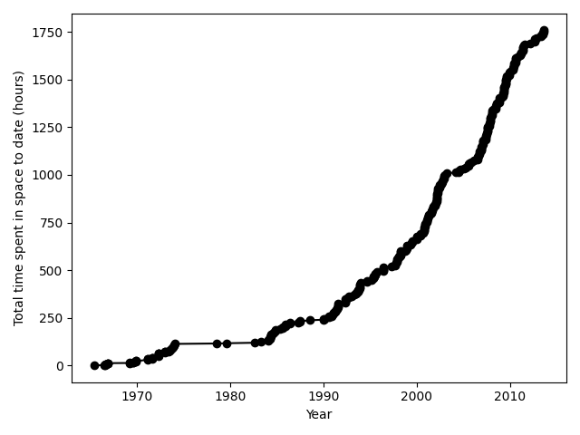

Spacewalks

Example code used for the Software tools and practices for open and reproducible research workshop, organised by the Software Sustainability Institute and funded by UK Reproducibility Network (UKRN), 1-4 April 2025.
-
Course material (including prerequisite knowledge, target audience and learning objectives): https://carpentries-incubator.github.io/fair-research-software/.
-
Workshop website with the all the details and tentative schedule is at: https://softwaresaved.github.io/2025-04-01-good-software-practices/.
-
Setup instructions are at https://carpentries-incubator.github.io/fair-research-software/#setup.
Overview
Spacewalks is a Python analysis tool for researchers to generate visualisations and statistical summaries of NASA's extravehicular activity datasets.

Features
Key features of Spacewalks:
- Generates a CSV table of summary statistics of extravehicular activity crew sizes.
- Generates a line plot to show the cumulative duration of spacewalks over time.
Pre-requisites
Spacewalks was developed using Python version 3.12
To install and run Spacewalks you will need have Python >=3.12 installed. You will also need the following libraries (minimum versions in brackets)
- NumPy >=2.0.0 - Spacewalk's test suite uses NumPy's statistical functions
- Matplotlib >=3.0.0 - Spacewalks uses Matplotlib to make plots
- pytest >=8.2.0 - Spacewalks uses pytest for testing
- pandas >= 2.2.0 - Spacewalks uses pandas for data frame manipulation
You can install all required modules using this command from the root directory of the repository:
python3 -m pip install -r requirements.txt
Installation instructions
unset PYTHONPATH PYTHONSTARTUP
python3 -m venv ./venv_spacewalks
python3 -m pip install -r requirements.txt
Activate the created python environment
Before running the main script or testing script, make sure to activate the created virtual environment: * On GNU/Linux:
source ./venv_spacewalks/bin/activate
- On Windows:
source ./venv_spacewalks/Scripts/activate
A simple usage example
To regenerate the results and figures, run eva_data_analysis.py using python3:
python3 eva_data_analysis.py
To specify the input JSON (INFILE) and output CSV file (OUTFILE):
python3 eva_data_analysis.py INFILE OUTFILE
For contributors/developers
Run unit tests
To run all unit tests:
python3 -m pytest --cov --cov-report=html
Test repository fairness
-
Install howfairis.
-
Then run:
howfairis https://github.com/mtav/spacewalks
requirements.txt update
python3 -m pip freeze > requirements.txt
Documentation build
mkdocs build
Documentation deployment
mkdocs gh-deploy